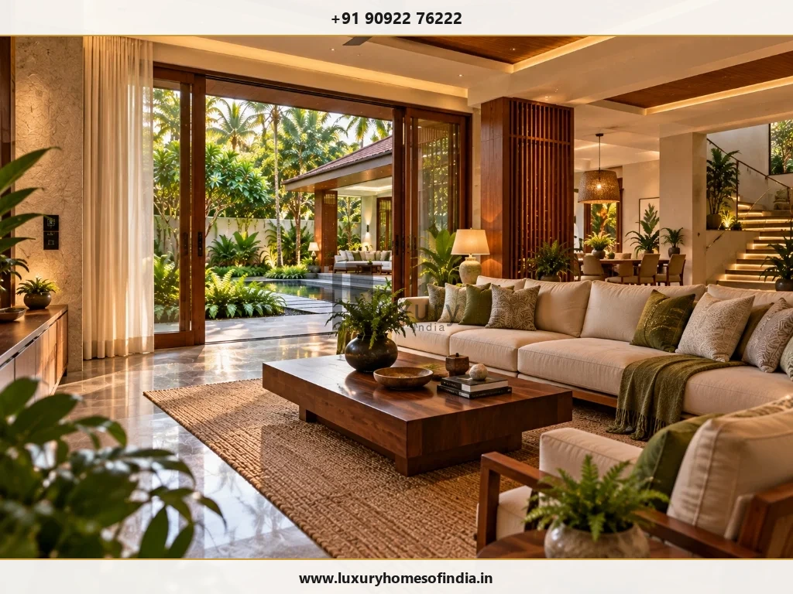
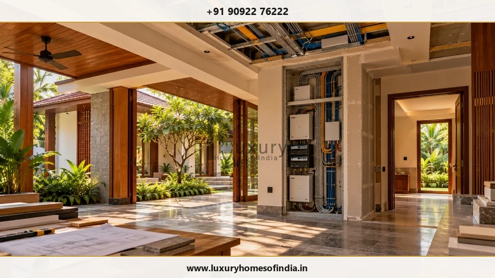
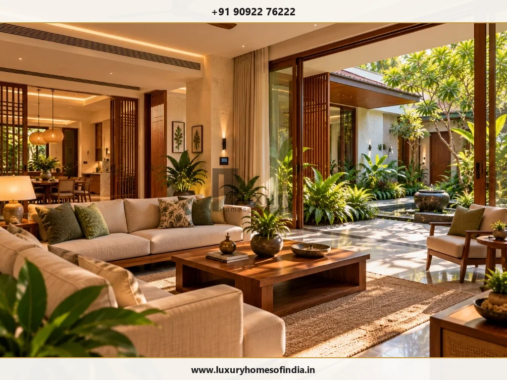
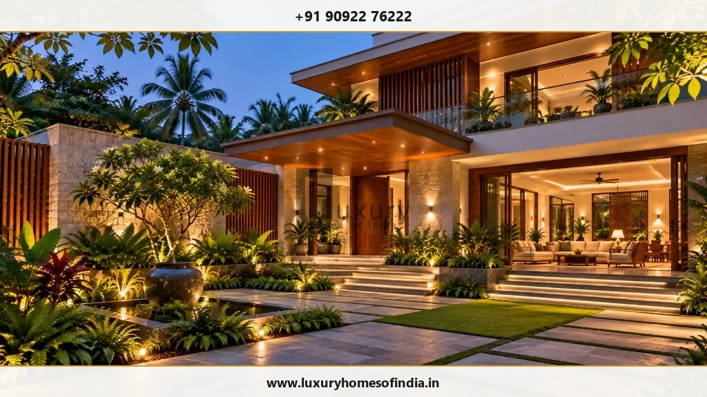

Smart Home Automation for Luxury Villas in Chennai
Technology planned around the way your villa is lived in.
Key Takeaways: Smart Villa Infrastructure
- Structured Cabling Architecture: High-end villa automation relies on wired Cat6A/fiber optic backbone conduits and KNX/Lutron bus wiring, laid down before ceiling and wall plastering.
- Local Processing vs. Cloud Dependency: Critical villa subsystems (lighting keypads, HVAC control, access gates) must operate on local processor hubs to guarantee instant responsiveness even during cloud internet drops.
- HVAC & Motorized Curtain Integration: Coordinating VRF air conditioning and motorized curtain pockets during electrical rough-ins prevents unsightly exposed wires and ensures automated climate energy efficiency.
- Physical Keypads & Scene Controls: Replace rows of confusing light switches with elegant multi-button wall keypads engraved with intuitive scenes ("Welcome", "Entertainment", "All Off").
- Account Ownership & Admin Security: Homeowners must retain master admin credential ownership and password control upon project handover, ensuring full data privacy.
Smart-home automation works best when it feels completely effortless. For a luxury villa in Chennai, the fundamental question is not how many connected gadgets can be crammed into a room—it is how lighting, climate control, motorized drapery, access security, and entertainment systems should work together to simplify your daily routines.
Automation requirements must be coordinated early alongside architectural design, electrical conduit layouts, false ceiling details, interior joinery, and the villa's core network infrastructure. If you are exploring smart home automation for villas in Chennai, start with your family's daily lifestyle priorities. Then define the infrastructure, protocols, wall keypads, and specialist team needed to execute them.
At Luxury Homes of India, smart-home provisions form an integral part of our residential design and build offerings. We coordinate architectural conduit pathways, server rack locations, and interior joinery pockets in sync with appointed automation specialists.

Start with how you want the villa to work
A smart home should solve genuine everyday living challenges rather than create frustrating technical complexity. Before selecting brand hardware or downloading apps, evaluate key functional scenarios:
- Daily Repeat Routines: Morning wake-up scenes, evening lighting dimming, or "All Off" bedtime commands.
- Room Control Priorities: Frequented spaces (master suite, living rooms, private home theatre) require tactile wall keypads rather than smartphone reliance.
- Occupant Accessibility: Ensuring family members, children, elderly parents, and house staff can operate basic lights intuitively.
- Physical Fallback Controls: Maintaining physical wall switches for every critical light circuit in case of system servicing.
- Network Interruption Behavior: Ensuring lights, doors, and AC continue operating locally if internet connectivity drops.
- Account Administration: Establishing full homeowner ownership of primary master accounts and security passwords.
Core subsystems in a luxury villa automation brief
Architectural Lighting Control
Transform multi-circuit lighting with scene-based dimming. Keypads allow single-button activation of curated scenes like "Entertaining", "Dining", or "Pathway Night Light" across continuous LED coves and accent spotlights.
Motorized Curtains and Blinds
Automate high-reach drapery across double height living rooms and bedrooms. Power junction boxes and motor recess pockets inside ceiling pelmets must be detailed prior to ceiling plastering.
HVAC Climate Integration
Integrate VRF/VRV central air conditioning units with smart thermostats. Automatically adjust room temperatures based on room occupancy, motorized shade positions, and tropical humidity levels in Chennai.
Access Control & Video Security
Unify IP video door phones, biometric digital door locks, motorized driveway gates, perimeter beam sensors, and CCTV surveillance under one secure monitoring platform.

Plan the infrastructure before interior finishes
Successful villa automation depends entirely on invisible physical infrastructure installed during early civil construction:
| Planning Area | Key Technical & Architectural Coordination |
|---|---|
| Electrical Provisions | Dedicated 3-phase sub-panels, neutral wiring at switch boxes, and isolated clean power supplies for AV racks. |
| Structured Cabling | Run Cat6A ethernet and fiber optic conduits from a central server rack to every room, wireless AP location, and TV node. |
| Wired Bus Topology | Install green KNX bus cables or Lutron control loops linking wall keypads directly to central DIN-rail dimmer panels. |
| Wi-Fi Network Coverage | Position ceiling-mounted Enterprise Access Points (PoE) to guarantee seamless Wi-Fi roaming across all floors and gardens. |
| AV & Server Rack Space | Design a ventilated 19-inch equipment rack enclosure with dedicated AC cooling and UPS battery backup. |
| Joinery & Ceiling Pockets | Detail 150mm ceiling pelmets for motorized curtain tracks and concealed access hatches for lighting drivers. |
| Future Expansion | Lay spare 32mm PVC conduit pathways between floors to accommodate future technology upgrades easily. |

Make reliability part of the technical specification
Evaluate a smart home system not only when functioning normally, but during unexpected power transitions or network interruptions in Chennai:
- Local Subsystem Autonomy: Lighting keypads, door locks, and AC units must operate on local wired buses without cloud internet.
- Automatic Power Recovery: When grid power returns or generator backup kicks in, systems must restore pre-set scenes smoothly without flashing lights.
- Tactile Manual Override: Mechanical bypass switches inside central DB panels ensure lights can be operated manually during system maintenance.

Privacy, data security, and account ownership
Connected villa platforms collect operational data and manage remote access. Protect your household privacy from day one:
- Master Account Ownership: Ensure primary administrator accounts (Control4, Lutron, Apple Home) are registered under the homeowner's personal email.
- Installer Access Control: Revoke temporary installer access keys once commissioning and testing are completed.
- Local Data Storage: Prioritize security camera NVRs and smart hubs that store video footage locally on encrypted hard drives rather than public cloud servers.

What should a smart villa proposal include?
To evaluate vendor proposals accurately, insist on a comprehensive scope documentation breakdown:
- Detailed floor-by-floor bill of quantities (BOQ) listing keypad models, dimmers, motor modules, and sensors.
- Schematic line diagrams showing conduit routes, cable specifications (Cat6A / KNX / Fiber), and DB panel layouts.
- Clear scope boundaries between civil electrician conduit wiring, joinery motor pocket creation, and automation integration.
- Commissioning timelines, scene programming sessions, user training handovers, and structured Annual Maintenance Contracts (AMC).
Frequently Asked Questions
Make your villa smarter—not more complicated
Bring the routines you want to simplify and the functions you want to coordinate. Talk to Luxury Homes of India about planning smart-home requirements alongside your villa's architecture, interiors, and execution.